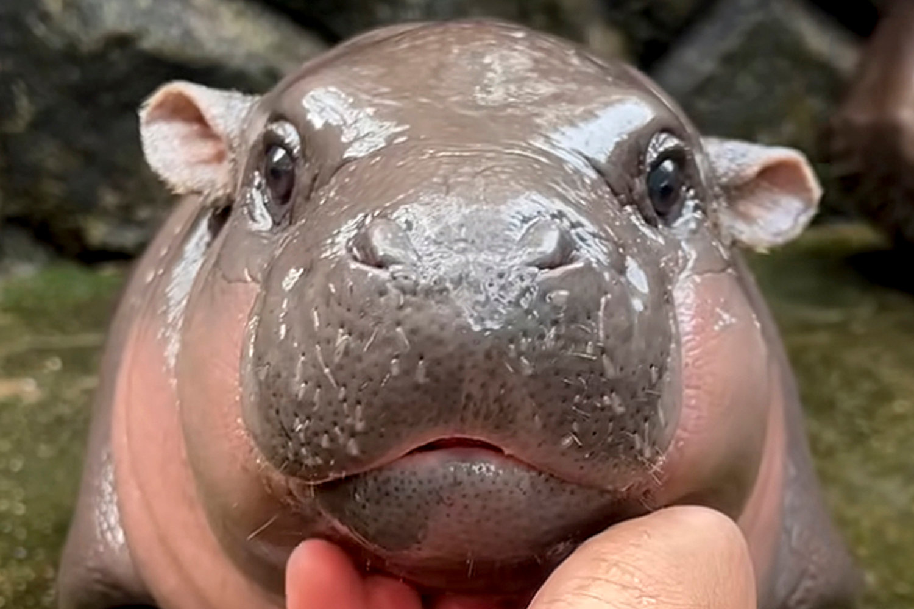

Pygmy Hippos are listed as endangered on the International Union for Conservation of Nature. In 2015, the hippos were assessed and there were less than 2,500 mature pygmy hippos left in the wild.
Why are they endangered?
The reason for the loss in population of pygmy hippos is due to their habitats being destroyed. They live in forested areas near rivers, streams, and swamps so they can stay wet. However, in 2010, their habitats started to be destroyed and degraded. The land was used to create plantations for things like oil palm, cocoa and rubber. Pygmy hippos are endangered due to various factors that continue to reduce their population. Habitat loss from deforestation remains the most significant threat. Illegal mining, poaching, and subsistence farming have fragmented forests, making wildlife more vulnerable to human predators. Although hunting pygmy hippos is illegal in Liberia and despite government campaigns raising awareness about its conservation impact, the bushmeat trade continues to flourish in major towns. Food insecurity, driven by agricultural challenges, poor infrastructure, and inadequate water facilities, forces communities to exploit forest resources for survival. The preference for pygmy hippo meat, considered more palatable than that of larger hippos, fuels ongoing hunting despite legal prohibitions.

How can we help?
that continue to reduce their population. Habitat loss from deforestation remains the most significant threat. Illegal mining, poaching, and subsistence farming have fragmented forests, making wildlife more vulnerable to human predators. Although hunting pygmy hippos is illegal in Liberia and despite government campaigns raising awa